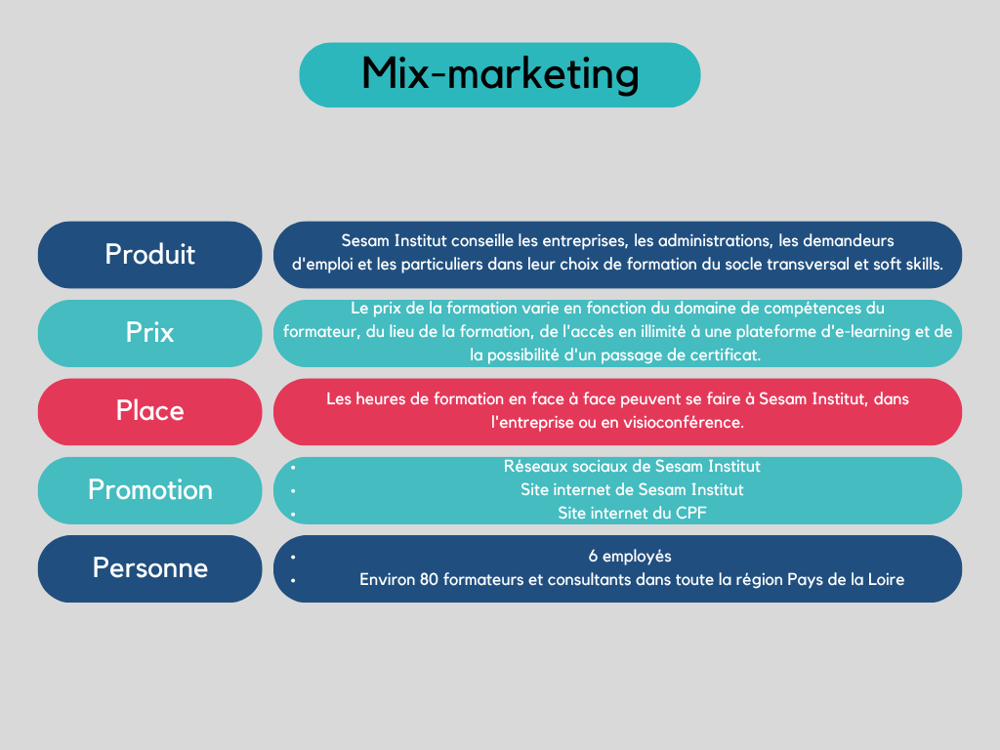
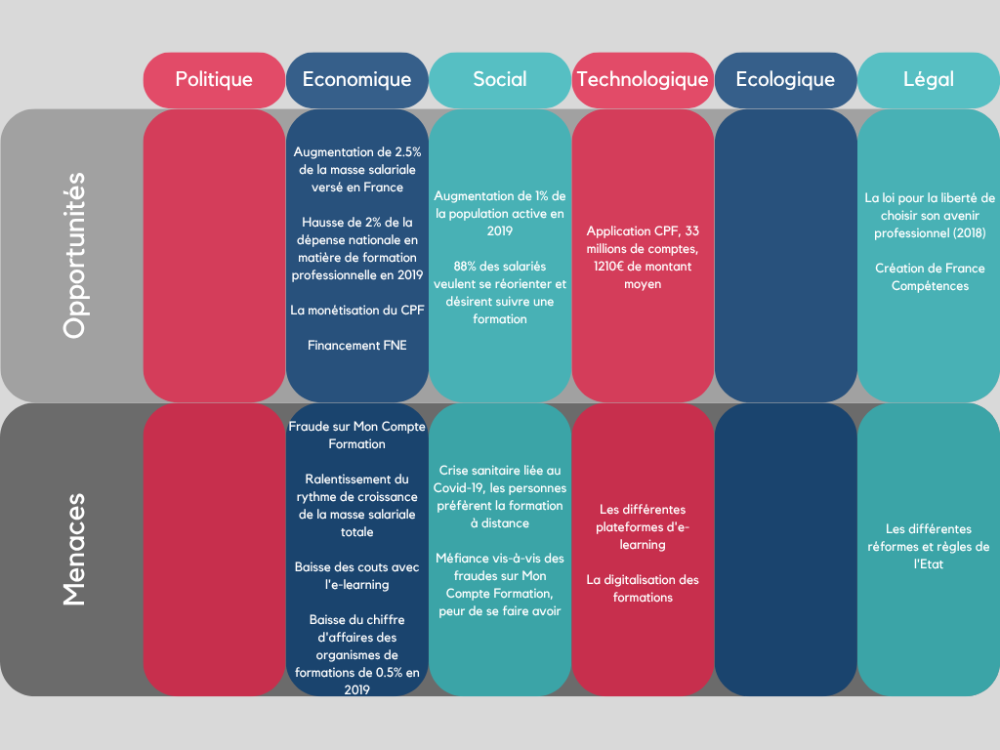
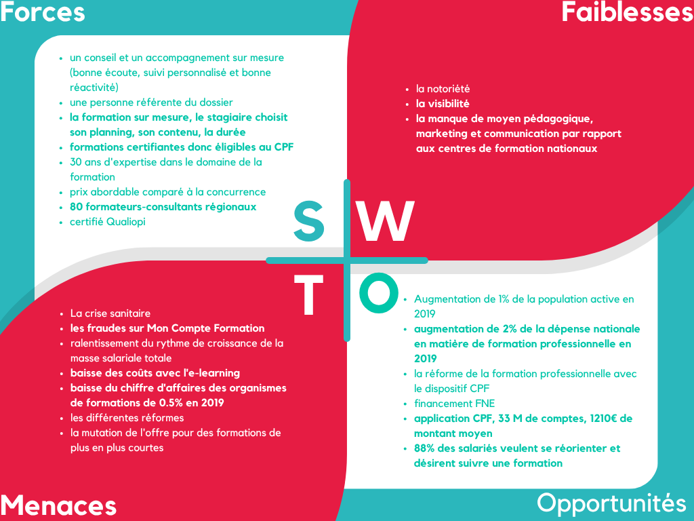
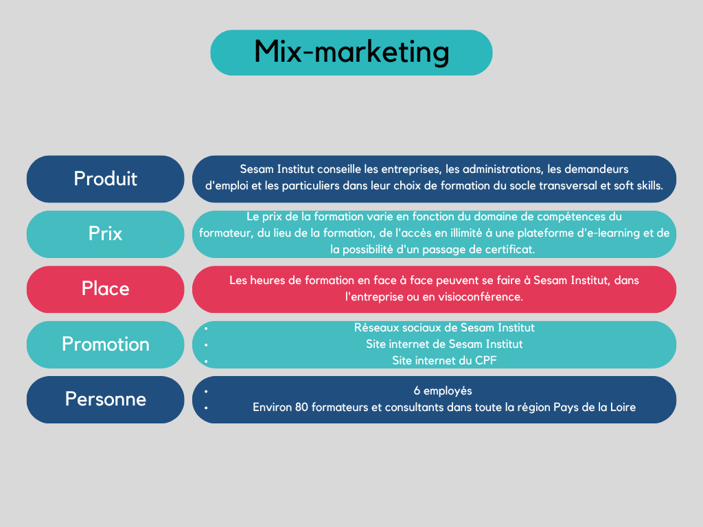
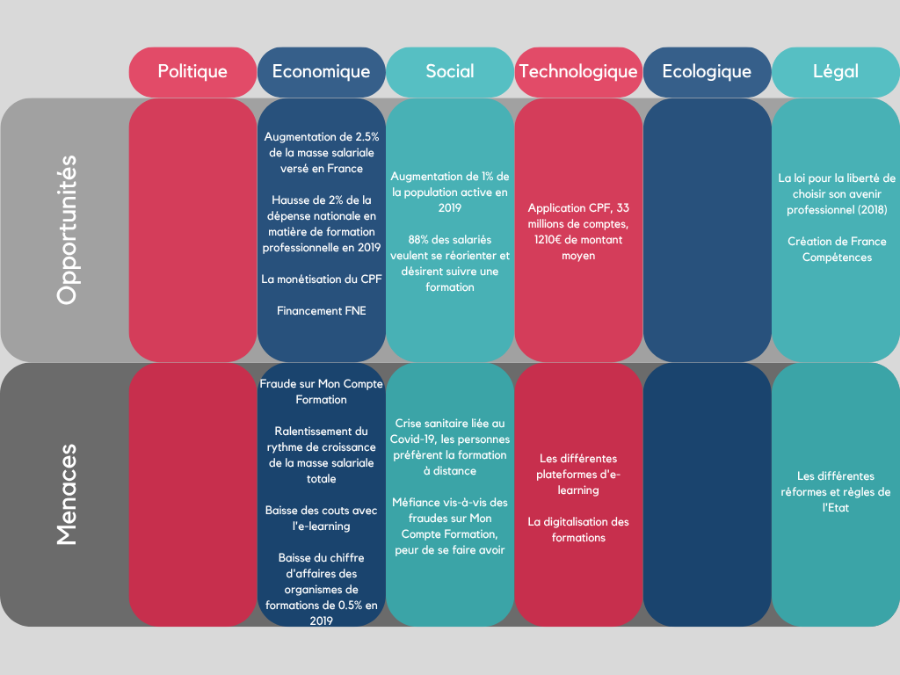
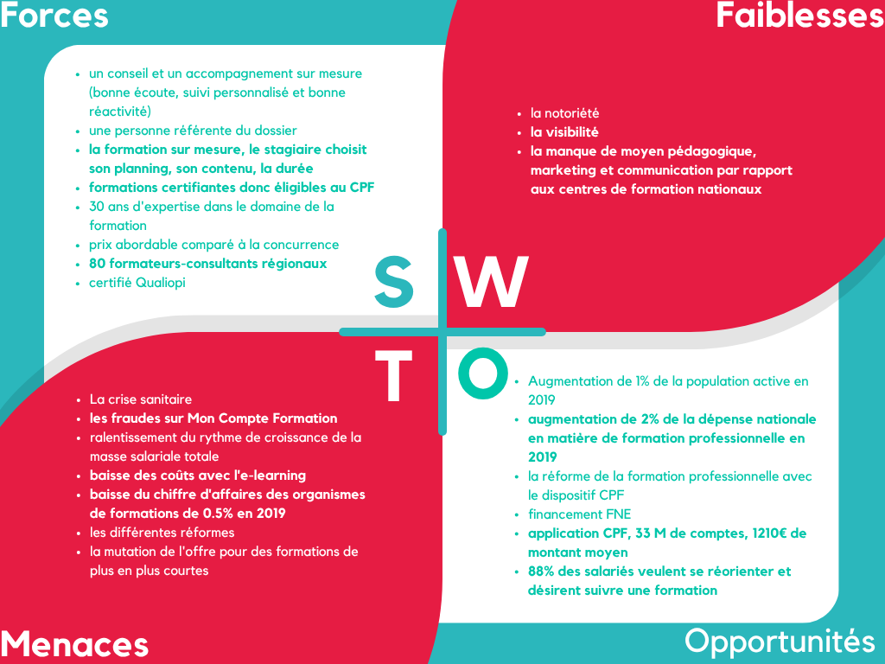
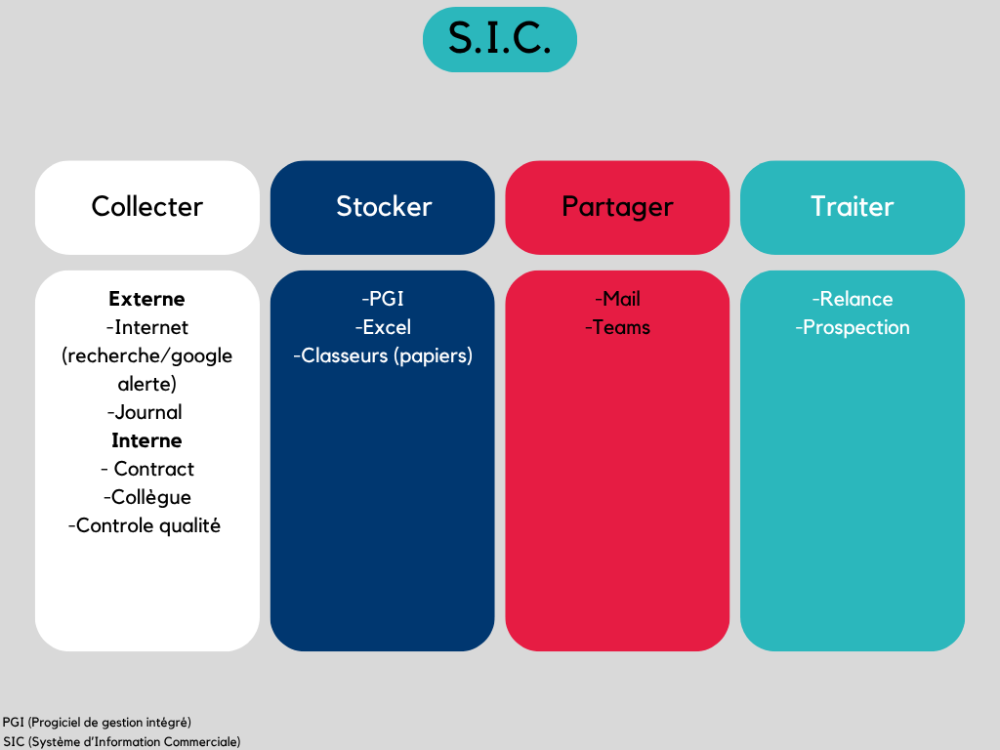
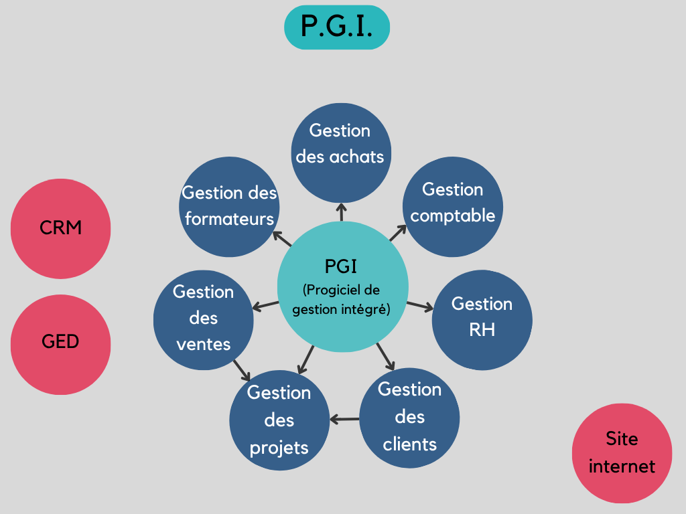
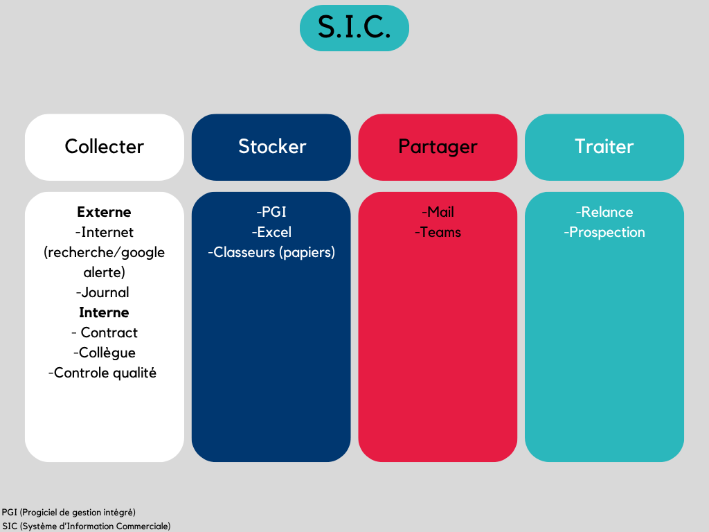
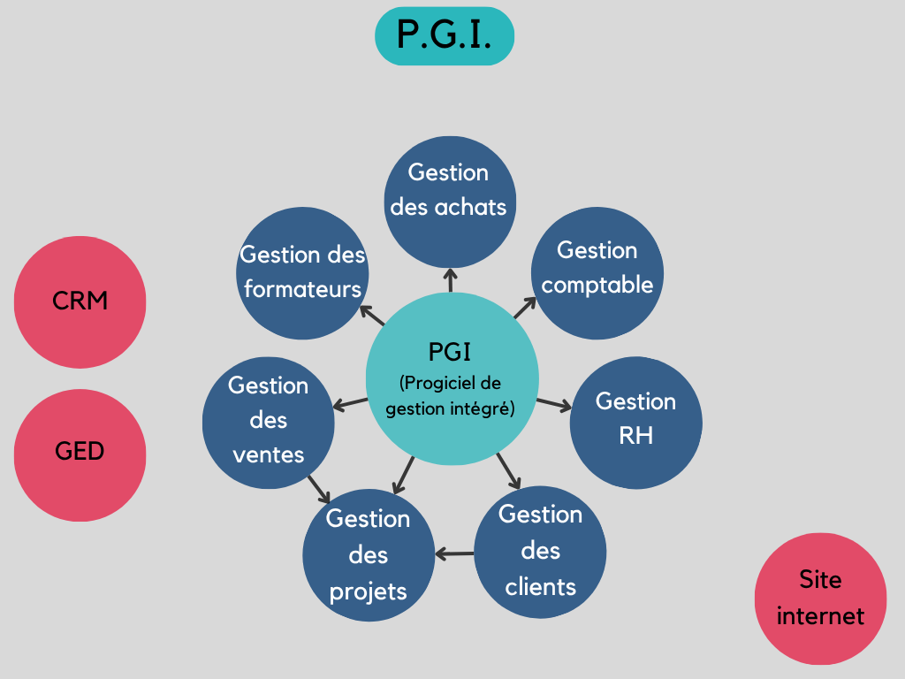

Contexte et cadre du stage
En 2022, dans le cadre de mon BTS, j’ai effectué un stage de huit semaines au sein de l’entreprise Sesam Institut, située sur l’Île de Nantes. Ce stage s’est déroulé en deux périodes (2 semaines puis 6 semaines) et m’a permis de confronter mes apprentissages théoriques à des missions concrètes en entreprise.
Présentation de l’entreprise et du secteur
Sesam Institut est un organisme spécialisé dans la formation professionnelle, intervenant auprès d’un large public (salariés, demandeurs d’emploi, entreprises). L’entreprise évolue dans le secteur des services, où la qualité, la réactivité et la satisfaction client sont essentielles.
Missions réalisées et compétences mobilisées
Intégrée à l’équipe dès le premier jour, j’ai mené plusieurs missions structurantes :
Organisation et interactions professionnelles
J’ai évolué dans un cadre professionnel dynamique, en interaction constante avec les formateurs, la responsable commerciale et les clients. L’autonomie, la capacité à collaborer et l’adaptabilité ont été des qualités indispensables dans la réussite de mes missions.
Communication, autonomie et prise d’initiative
Ce stage m’a permis de développer une communication professionnelle efficace, tant à l’écrit qu’à l’oral. J’ai su faire preuve d’initiative, notamment dans la gestion de mes relances commerciales et dans l’amélioration des supports de communication interne.
Bilan personnel
Cette expérience m’a permis de :
Une des difficultés rencontrées a été la gestion du stress lié à la prospection commerciale. Grâce à l’accompagnement de mon tuteur et à ma persévérance, j’ai appris à structurer mes échanges et à gagner en aisance relationnelle.
Impact sur mon projet professionnel
Ce stage a confirmé mon attrait pour les métiers de la relation client et du développement commercial. Il m’a également sensibilisé à l’importance de la qualité de service et de l’écoute active dans la réussite d’une entreprise de services.

 





 



.png)


.png)